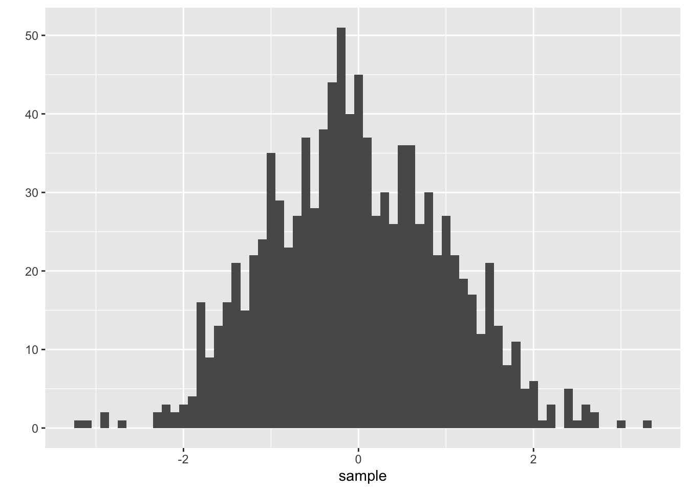
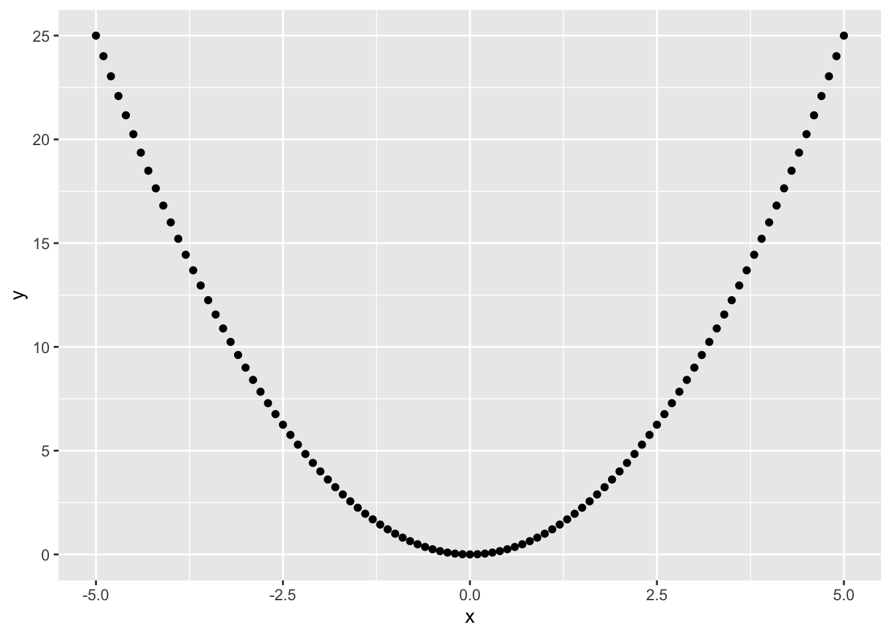
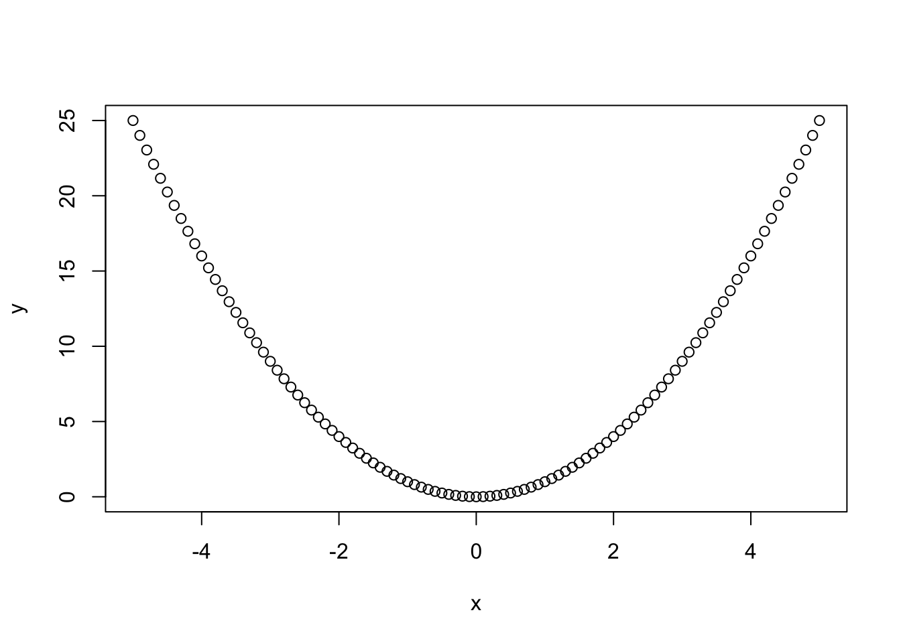

1.6 Packages
1.6.1 Packages with Data
Of course, we don’t need to invent everything ourselves. R comes with tons of great functions we can use for our analysis. One of the most important tasks in statistics is to perform a linear regression with one dependent and one or more independent variables.
wage1 into R and use the lm()-function to fit a linear model to the data and calculate the effect of education on wage in the simple bivariate case. Summarize and interpret your findings considering that the data was recorded back in the 1970s in the USA.
Naturally, the first step is to load the required data set into R. Luckily the data is simply available as a package that can be installed with install.packages("wooldridge"). After installation and loading the package with library(wooldridge) we can see the whole documentation including variable descriptions by typing ?wage1.
#R> [1] 526 24#R> [1] "wage" "educ" "exper" "tenure" "nonwhite" "female"
#R> [7] "married" "numdep" "smsa" "northcen" "south" "west"
#R> [13] "construc" "ndurman" "trcommpu" "trade" "services" "profserv"
#R> [19] "profocc" "clerocc" "servocc" "lwage" "expersq" "tenursq"As we can see the whole data set includes 526 observations and 24 variables. To get a first impression of the data we can type View(wooldridge::wage1). This will produce a viewer tab which can be used to view and inspect the data. Although it looks like an editable spreadsheet, the data can only be viewed and not changed. If you want to modify data you have to go back to the script view or command line and use commands to do this. If you are familiar with tools to handle spreadsheets like Excel you may think of quickly editing the data set over there and return to R afterward. If this came to your mind, just stop thinking about it now! R is much more powerful and way quicker than Excel and its lookalikes, so there is really no reason to chop up your workflow.
As we will only calculate a simple bivariate model we don’t need all the data, so we extract what we need from the big set. In our simple case, these are the columns wage containing the hourly average wages in USD of the interviewed individuals and educ their respective years of education. So we basically have to extract the first two columns from the data set.
wage <- wooldridge::wage1$wage # Extract wage data (hourly wage in $)
education <- wooldridge::wage1$educ # Extract education data (education in years)
# Initial data inspection
summary(wage) # Summarize the variable wage#R> Min. 1st Qu. Median Mean 3rd Qu. Max.
#R> 0.530 3.330 4.650 5.896 6.880 24.980#R> Min. 1st Qu. Median Mean 3rd Qu. Max.
#R> 0.00 12.00 12.00 12.56 14.00 18.00Extracting the needed columns from the data frame is easy. We already discussed the $-Operator, which allows us to address named parts of an object. After extracting the data and giving the variables comprehensive names, we should gain a condensed overview of what we are using for our analysis. The summary() command is a generic function which works for many types of data and responds with a useful summary depending on the input. In our case summary() returns typical descriptive measures. As we now have a first feeling of the data, we can construct our linear model using the lm()-function.
#R>
#R> Call:
#R> lm(formula = wage ~ 1 + education)
#R>
#R> Coefficients:
#R> (Intercept) education
#R> -0.9049 0.5414When simply executing the lm()-function R only returns the parameter estimates. That is far too less to evaluate if the model is appropriate or if the estimated effects are significant. We can use the summary()-function again to gain a deeper understanding of what we have calculated and how our model looks like. For convenience and re-usability it makes sense to store the results in an own object.
model.uni <- lm(wage ~ 1 + education) # Store results in variable
summary(model.uni) # Summarize the fitted model#R>
#R> Call:
#R> lm(formula = wage ~ 1 + education)
#R>
#R> Residuals:
#R> Min 1Q Median 3Q Max
#R> -5.3396 -2.1501 -0.9674 1.1921 16.6085
#R>
#R> Coefficients:
#R> Estimate Std. Error t value Pr(>|t|)
#R> (Intercept) -0.90485 0.68497 -1.321 0.187
#R> education 0.54136 0.05325 10.167 <2e-16 ***
#R> ---
#R> Signif. codes: 0 '***' 0.001 '**' 0.01 '*' 0.05 '.' 0.1 ' ' 1
#R>
#R> Residual standard error: 3.378 on 524 degrees of freedom
#R> Multiple R-squared: 0.1648, Adjusted R-squared: 0.1632
#R> F-statistic: 103.4 on 1 and 524 DF, p-value: < 2.2e-16The summary view of the regression object model.uni gives us much more information than the lm()-function itself. This allows us to evaluate and interpret the model parameters as we have learned in our basic undergraduate statistic courses.
1.6.2 Packages with Functions
There are thousands of functions in the R core, but sometimes this is not enough and you have the need to expand R’s functionalities. As you are not the only programmer out there many of the required additional functions already exist, written by users like you, professionals or professors all around the world. And they are giving them to you for free so that you can use them for any purpose you want. So before starting a new programming project always do proper research and look at what is already out there.
Results from statistical works and analysis are often displayed using graphical tools. Producing plots of data to gain a quick aggregated overview of the data or using graphics to support your results is common, needed and useful. R is already equipped with tools to generate plots like plot() and hist() and RStudio makes them easy to use and comfortable to handle their outputs.
An additional option that aims to produce strong, nice looking plots with less effort than the standard R toolset is the package ggplot2. Their creators state that the package “takes care of many of the fiddly details that make plotting a hassle (like drawing legends)”. It seems to be worth to add ggplot2 to our portfolio. We are looking at some basics and produce some nice plots here. But first, we need to install the package. As long as you are connected to the Internet it is quite easy to install new packages using the command line:
That’s it, already. R takes care of the rest. It will visit the website, download the package and install it with all dependencies automatically and report the progress in the console. If you already know the name of a package and want to install it, you can do this by simply replacing the text in quotation marks. If you don’t know the packages name - we will discuss some resources besides your favorite search engine to find useful packages and additional help later.
Before you can use the power of a freshly installed package you have to advise R to load the package (even if it is already installed). You can do this using the library()-function. If you are trying to execute a command from the package before loading it R will respond with an error.
One of ggplot2’s most powerful functions is the ability to create quick (but nice looking) plots using qplot(). This is a generic function which produces its output dependent on its input, just like summary(). If you give qplot() a single vector it will produce a nice histogram, if you give it two vectors of equal length it will create a scatter plot.
sample <- rnorm( 1000 ) # Generate 1000 norm. dist. numbers
head(sample, 10) # Preview the first 10 numbers#R> [1] -1.539950042 -0.928567035 -0.294720447 -0.005767173 2.404653389
#R> [6] 0.763593461 -0.799009249 -1.147657009 -0.289461574 -0.299215118
As you can see, it is very fast forward to generate nice histograms out of single vectors. The argument binwidth = .1 defines the width of each cluster to aggregate the generated values into pillars. As you may have noticed I have not written 0.1. Lazy programmers (and who isn’t?) can get rid of the leading zero and start floating point numbers with the dot. Please notice that your histogram may look a little different as rnorm() also relies on the internal random number generator and of course you can use the function hist() instead to produce a similar plot. We will dive deeper into random numbers and distributions in one of the following chapters. Let’s try out what happens if we give qplot() two vectors.

